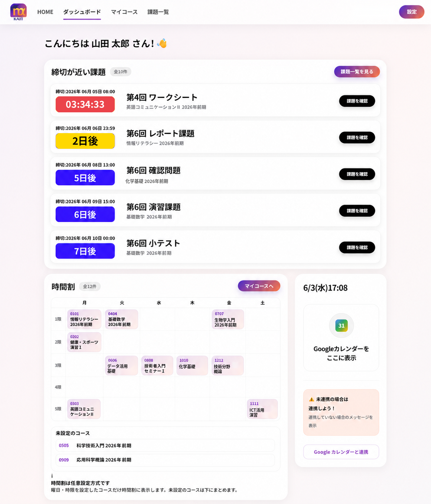

01
迷わないUI
情報の整理と余白を見直し、必要な機能へすばやくたどり着ける ダッシュボードを目指します。
大学ごとに最適化された機能と導入イメージを確認できます。
京都産業大学向けの機能を表示しています。
moodle αは、大学ごとのMoodle環境に合わせて表示や導線を最適化し、 より自然で、より快適で、より現代的な学習体験へ導く拡張機能です。
情報の整理と余白を見直し、必要な機能へすばやくたどり着ける ダッシュボードを目指します。
近い課題を強く、重要な予定を自然に。 締切の把握を、感覚的に分かる表示へ変えます。
それぞれの大学のMoodle環境に合わせて、 日々の学習に必要な表示と導線を整えます。
京都産業大学のMoodle環境に合わせて、日々の課題管理とアクセスを快適にします。
課題や予定をGoogleカレンダーに取り込み、スマートフォンで通知。 提出忘れの防止をサポートします。
情報の優先度を整理し、見たいものを迷わず確認できるダッシュボードへ。 毎日の操作がより快適になります。
締切の近い課題を見やすく整理し、危険な予定をひと目で把握。 今日やるべきことがすぐ分かります。
PCからMoodleへ最短でアクセス。 毎回検索する手間を減らし、日常の導線をすっきりまとめます。
設定した授業を時間割形式で整理。 日々の授業へ直感的にアクセスできるダッシュボードを実現します。
コース一覧をカード形式で整え、必要な授業を探しやすく。 ダークモードでも自然に使える表示へ改善します。
提出期限の近い課題をダッシュボード上部に整理。 今取り組むべき課題を、ひと目で確認できます。
ダッシュボード、マイコース、授業ページ、課題一覧ページの表示を統一。 夜間も見やすい学習環境を整えます。
見やすく整理された締切表示とカレンダーの統合で、 課題管理をもっと自然なものにします。

赤・黄・青の視認性を活かした表示で、 今すぐ取り組むべき課題が自然と目に入ります。
Googleカレンダーとの連携により、 Moodleの情報を日常のスケジュール管理へなめらかにつなげます。
マイコースや検索などの入口を整理し、 PCでもスマホでもストレスの少ない導線を実現します。

自分で設定した授業を時間割形式で表示。 必要な授業へ、すばやくアクセスできます。
コースのカード表示を整え、情報の見やすさと操作性を改善。 必要な授業を探す負担を減らします。
ダッシュボード、授業ページ、課題一覧ページを整え、 統一感のある学習環境を実現します。
すでに便利なだけで終わらず、 今後も学生の使いやすさを中心に機能を進化させていきます。
大学ごとのMoodle環境に合わせて、 カレンダー連携の対応範囲を順次拡大していきます。
締切の近い課題をPC上で確認できる、 ポップアップ通知機能を検討しています。
開発の歩みと、これからの公開情報をシンプルにまとめています。
moodle αの構想と開発をスタートしました。
機能改善とUI調整を重ね、β版 ver.9.0.1 が完成しました。
moodle α公式サイトを公開し、 機能紹介や今後の情報発信を開始しました。
神奈川工科大学向けのUI改善、時間割表示、 マイコース改善、ダークモード対応を追加しました。
お知らせ、お問い合わせ、使い方ガイドは公式Instagramにて発信します。 最新情報や導入方法を、分かりやすくお届けします。
アップデート情報、導入ガイド、お問い合わせ対応などは、 公式Instagramにてご案内しています。